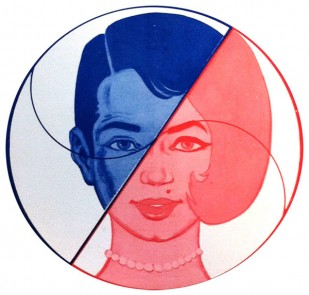
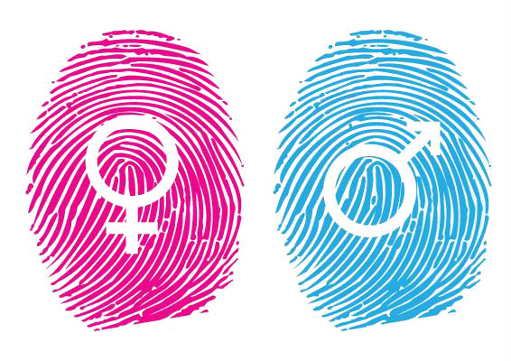

Did You Know
Like racial discrimination, gender discrimination has been prevalent since the beginning of time, however with different stigmas for different ethnicities. For example, European women are stereotyped to be dependent on their looks, always be presentable, and not have to work a day in their lives, while Native American women and men were equally responsible to the survival of their societies. Native American women were responsible for clearing fields,plowing, hoeing, harvesting, digging pits and storing food as well as assembling lodges, collecting wild plants and firewood, etc. Since the interconnectivity throughout the world, the stereotype of women has become branches of the European women which has been affecting transgender women as well.
Native American Gender Roles- Document any quid pro quo: One type of sexual harassment is where the victim is offered a job, promotions, or factors if you submit to the harassers or if you are threatened. To ensure justice, write down the date, time, place, and witnesses(if any).
- Document any comments and different treatments you have received: This is called a hostile environment in which you are being harassed due to your gender or the gender you have transitioned into. This could be comments about your gender being inferior or being treated differently than the opposite sex.
- Gather your evidence: Keep all notes and recordings in a safe place such as your purse/briefcase or home computer and print out any texts and keep them safe.
- Report the harassment: According to the law, the victim must report to head offices before suing to give the employer to correct the situation. Report this in writing. It does not ensure that the employer will get fired but it is required to have them stop the harassment. They are held liable if the harasser does not stop.
- File a complaint with the EEOC: If no action has been taken from the company even after you have reported it, you can file a complaint with the Equal Employment Opportunity Commission is the next step. If the employer does retaliate, you can possibly sue them.
- Find a lawyer: If you do decide to sue, it is important to find a lawyer that is committed to your case.
- Leave the company: If your company will not do anything about the situation, the best option is to leave instead of taking the emotional abuse. But remember if you do not do anything about the harassment, someone else might be affected too. It is the law to keep you safe.
Sex Discrimination at Work
If you have ever been paid less than your male counterpart or have been passed up on a promotion because of your sex and not your work ethic, then you have been discriminated against.
Sexual Harassment
People (not just women), still in this day and society, are subjected to unwanted sexual advancements. Harassments are not just subjected to verbal or physical of sexual nature but can include offensive remarks about their sex. There are steps to follow to ensure justice has been served if you believe that you are the victim of sexual harassment at work.